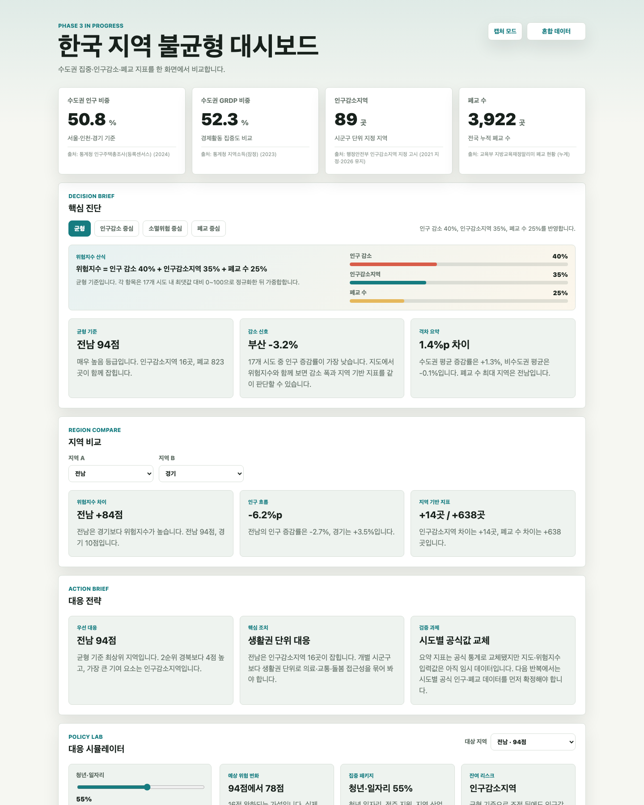
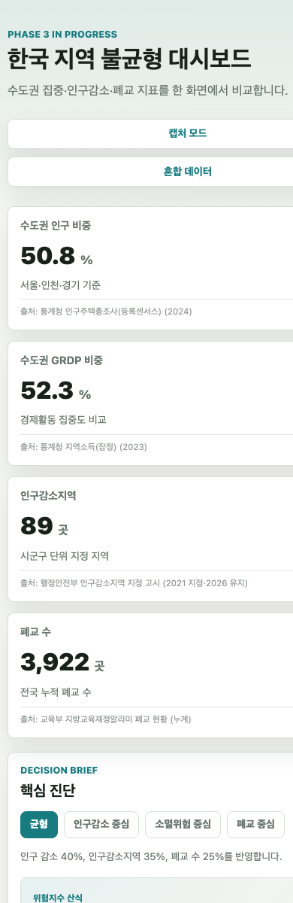

Software Engineering Report
프로세스에 입각한 바이브코딩의 효과 분석
처음에는 AI를 이용하면 화면을 빨리 만들 수 있다는 점에만 관심이 갔다. 그러나 실제로 지역 불균형 대시보드를 만들면서 느낀 것은 조금 달랐다. AI가 코드를 빠르게 제안해 주는 것만으로는 제출 가능한 소프트웨어가 되지 않았고, 요구사항, 설계 결정, 검증, 회고를 계속 묶어 두었을 때 비로소 결과물이 설명 가능한 프로젝트가 되었다.
1. 주제 선정과 문제 정의
이 프로젝트에서 만든 소프트웨어는 한국 지역 불균형을 보여 주는 웹 대시보드이다. 수도권 인구 비중, 지역내총생산 집중, 인구감소지역, 폐교 수처럼 따로 보면 흩어진 통계를 한 화면에 모아 지역 간 차이를 비교할 수 있게 했다. 단순 통계표를 복사하는 대신 지도, 차트, 위험지수, 지역 비교, 정책 대응 시뮬레이터를 붙여 사용자가 직접 기준을 바꿔 보도록 만든 점이 핵심이다.
처음부터 이 주제가 확정된 것은 아니다. 플래시카드나 습관 관리 앱처럼 구현이 쉬운 주제도 검토했지만, 그런 주제는 요구사항 분석과 리스크 관리가 단순해서 소프트웨어공학 과정을 보여 주기 약했다. 지역 불균형 대시보드는 데이터 출처, 지도 범위, 지표 산식, 시각화 해석, 제출 증빙까지 판단할 지점이 많았다. 그래서 바이브코딩을 그냥 빠른 코딩이 아니라 프로세스 안에서 관리해 볼 실험 대상으로 더 적합하다고 판단했다.
2. 적용한 방법론
본 프로젝트의 중심 방법론은 위험 기반 반복·점진 개발이다. 폭포수 모델처럼 처음에 모든 기능을 완전히 고정하기에는 데이터와 지도 구현의 불확실성이 컸고, 완전한 애자일 프로세스를 운영하기에는 1인 과제 규모가 작았다. 따라서 작은 Phase를 반복하면서 각 Phase마다 요구사항, 설계, 구현, 검증, 회고를 진행하는 방식을 택했다.
프로세스 다이어그램
이 흐름은 `docs/process.md`에 Mermaid 다이어그램으로도 남겼다. 보고서 본문에서는 핵심만 요약했지만, 저장소에서는 요구사항 명세, 설계 결정, 테스트 계획, 회고 문서가 서로 연결되도록 정리했다.
3. 요구사항 분석과 변경 관리
사용자는 세 부류로 나누었다. 첫째, 지역 불균형 문제를 빠르게 이해하려는 일반 사용자이다. 둘째, 과제 평가자이다. 평가자는 화면보다도 프로세스 적용 여부를 확인한다. 셋째, 저장소를 읽고 AI 활용 방식과 품질 관리를 검토하는 리뷰어이다. 이 구분을 한 뒤 기능 요구사항과 비기능 요구사항을 나누어 관리했다.
| 구분 | 주요 내용 | 반영 산출물 |
|---|---|---|
| 기능 요구사항 | 통계 카드, 차트, 지도, 위험지수, 지역 비교, 검색·필터, 폐교 분석, 정책 대응 시뮬레이터, 보고서 캡처 모드, PWA 설치성 | `docs/requirements.md`, `src/app.js` |
| 비기능 요구사항 | 정적 호스팅, 반응형 레이아웃, 데이터 재현성, 유지보수성, 접근성, 지도 경계 재현성 | `README.md`, `data/README.md`, `tests/` |
| 범위 제외 | 실시간 API, 사용자 계정, 시군구 정밀 지도, 폐교 위치 좌표 레이어 | `docs/design.md`, `docs/ai-log/` |
진행 중 가장 의미 있었던 변경은 "그냥 데이터만 보여주는 앱 아닌가"라는 피드백이었다. 이 피드백을 단순한 불만으로 처리하지 않고, 요구사항으로 바꾸어 정책 대응 시뮬레이터와 위험지수 시나리오를 추가했다. 사용자가 지역과 정책 투입 강도를 바꾸면 위험지수 변화 가설이 갱신되도록 한 것이다. 이 과정에서 기능 하나를 추가할 때도 요구사항 ID, 설계 기록, 테스트 기준을 함께 갱신했다.
4. 설계와 구현 결과
구현 결과물은 HTML, CSS, Vanilla JavaScript 기반의 정적 웹앱이다. Chart.js로 차트를 그리고, Leaflet과 저장소에 포함한 TopoJSON으로 시도 단위 지도를 렌더링한다. 서버나 데이터베이스 없이 GitHub Pages에서 실행되며, `manifest.webmanifest`, `service-worker.js`, 앱 아이콘을 추가해 지원 브라우저에서는 앱처럼 설치할 수 있다. 다만 앱스토어에 배포하는 네이티브 앱은 아니며, 정확히는 PWA 설치성을 가진 웹앱이다.
화면 렌더링 시퀀스
| 구현 기능 | 사용자가 할 수 있는 일 |
|---|---|
| 시도별 지도와 지표 전환 | 위험지수, 인구 증감률, 인구감소지역, 폐교 수 기준으로 지도를 바꾸어 본다. |
| 위험지수 시나리오 | 균형, 인구감소 중심, 소멸위험 중심, 폐교 중심 가중치를 비교한다. |
| 지역 비교와 탐색 | 두 시도를 비교하고, 검색·필터·정렬로 관심 지역을 찾는다. |
| 정책 대응 시뮬레이터 | 청년·일자리, 생활권 인프라, 폐교 활용 투입 강도를 조절해 예상 변화를 확인한다. |
| 보고서 지원 | 캡처 모드, 보고서 요약 Markdown, 인쇄 스타일을 통해 제출 자료를 준비한다. |
5. SW 산출물 캡처
아래 캡처는 2026-06-02 기준 대시보드를 실행한 결과이다. 캡처 파일은 로컬에만 보관하지 않고 `docs/assets/screenshots/`에 커밋했다. 이렇게 해야 보고서의 화면과 저장소의 코드가 같은 형상 관리 흐름 안에 남는다.


6. 검증과 품질 관리
품질 관리는 수동 확인과 자동 검증을 함께 사용했다. 정적 웹앱은 빌드 단계가 작기 때문에 오히려 JSON 구조 오류나 DOM id 변경 같은 문제가 눈에 잘 안 띌 수 있다. 그래서 기능이 늘어날 때마다 데이터 검증, UI 계약 검증, 제출물 검증을 추가했다.
| 검증 항목 | 도구 | 확인 내용 |
|---|---|---|
| 문법 검사 | `node --check src/app.js`, `node --check service-worker.js` | JavaScript 구문 오류 확인 |
| 데이터 검증 | `tests/verify-data.mjs` | 17개 시도, 요약 카드, 지도 경계 매핑, 필수 필드 확인 |
| UI 계약 검증 | `tests/verify-ui-contract.mjs` | 핵심 DOM id, 컨트롤 개수, 렌더링 함수, 요구사항 추적성 확인 |
| 제출물 검증 | `tests/verify-submission.mjs` | PDF, 캡처 이미지, PWA 파일, Pages URL, README 정합성 확인 |
| 원격 검증 | GitHub Actions | push마다 `npm test` 실행, Pages 배포 상태 확인 |
최종 검증 명령은 `npm test`이다. 보고서 PDF는 `npm run report:pdf`로 HTML에서 다시 생성할 수 있게 했다. 이 점은 단순히 PDF 파일만 제출하는 것보다 재현성이 높다.
7. 형상 관리와 지속적 토의 증빙
과제 조건상 막판에 몰아서 작업한 흔적이 보이면 감점될 수 있다. 그래서 기능 구현뿐 아니라 요구사항, 설계, 테스트, 회고, 캡처, PDF까지 GitHub 커밋으로 남겼다. `docs/ai-log/`에는 날짜별로 AI와 어떤 논의를 했고 어떤 결정을 내렸는지를 기록했다.
| 날짜 | 진행 내용 | 증빙 |
|---|---|---|
| 2026-05-18 | 주제 선정, AI 역할 분담, MVP 범위 결정 | `docs/ai-log/2026-05-18-kickoff.md` |
| 2026-05-21 | Phase 1 MVP, 데이터 초안, 문서 골격 작성 | `docs/ai-log/2026-05-21-phase1-mvp.md` |
| 2026-05-25 ~ 2026-05-31 | 프로세스 문서화, 지도, 위험지수, 지역 비교, 탐색 기능 확장 | `docs/process.md`, `docs/requirements.md`, commit history |
| 2026-06-01 ~ 2026-06-03 | 보고서 준비, 정책 시뮬레이터, 캡처, Pages 배포, PWA 설치성 추가 | `docs/submission-evidence.md`, `docs/final-report.pdf` |
| 2026-06-04 | 최종 보고서 문체와 과제 요구사항 대응 정리 | `docs/ai-log/2026-06-04-final-report-polish.md` |
8. 바이브코딩 효과 분석
프로세스 없이 바이브코딩을 하면 빠른 화면 구현은 가능하다. 실제로 AI는 카드 레이아웃, 지도 처리, 테스트 스크립트, README 구조 같은 작업을 빠르게 제안했다. 그러나 초반 결과물을 그대로 두면 "그냥 데이터를 보여주는 앱"에 가까웠다. 효과가 나타난 지점은 AI가 코드를 썼다는 사실이 아니라, 그 제안을 요구사항과 검증 기준 안으로 계속 되돌려 넣은 과정이었다.
Claude는 주로 요구사항 정리와 보고서 구조 논의에 사용했고, Codex는 구현, 테스트, 커밋 정리, 비판적 검토에 사용했다. 두 도구를 나누어 쓰니 한쪽 AI가 낙관적으로 말한 부분을 다른 쪽에서 현실적인 구현 범위로 줄이는 효과가 있었다. 이 점이 단일 AI를 그대로 따르는 방식과 가장 큰 차이였다.
9. 프로세스 적용의 교훈
10. 한계와 향후 개선
이 프로젝트의 가장 큰 한계는 데이터다. 요약 지표 일부는 공식 통계와 출처를 반영했지만, 시도별 분석값 중 일부는 아직 화면 검증용 임시 데이터가 남아 있다. 따라서 위험지수 순위는 실제 정책 판단의 근거가 아니라, 데이터 시각화와 프로세스 적용을 보여 주는 데모 지표로 해석해야 한다.
향후 개선은 세 가지이다. 첫째, 시도별 인구 증감률과 폐교 수를 모두 같은 기준연도의 공식 데이터로 교체해야 한다. 둘째, 위험지수 가중치와 등급 구간을 전문가 기준이나 공개 지표에 맞게 재검토해야 한다. 셋째, PWA 설치성은 갖추었지만 네이티브 앱 패키징은 하지 않았으므로, 실제 모바일 앱 배포가 목표라면 별도의 패키징 전략이 필요하다.
11. 결론
이번 프로젝트를 통해 확인한 결론은 분명하다. 바이브코딩은 구현 속도를 높여 주지만, 프로세스가 없으면 그 속도는 오히려 결과물을 불안정하게 만들 수 있다. 기능이 빠르게 늘어날수록 요구사항, 설계 이유, 검증 기준, 데이터 한계가 함께 관리되지 않으면 나중에는 무엇을 만들었는지 설명하기 어려워진다.
반대로 요구사항 분석에서 품질 관리까지의 흐름을 놓치지 않으면 AI는 꽤 강력한 개발 보조자가 된다. 본 프로젝트에서는 위험 기반 반복·점진 개발, V-Model식 추적성, ADR, 자동 테스트, AI 로그를 결합해 단순한 데이터 표시 화면을 분석형 웹앱과 제출 가능한 증빙 저장소로 바꾸었다. 따라서 프로세스에 입각한 바이브코딩의 효과는 "빨리 만들었다"가 아니라, 빠르게 만든 결과를 재현 가능하고 검증 가능한 소프트웨어 산출물로 정리할 수 있다는 점에 있다고 정리할 수 있다.